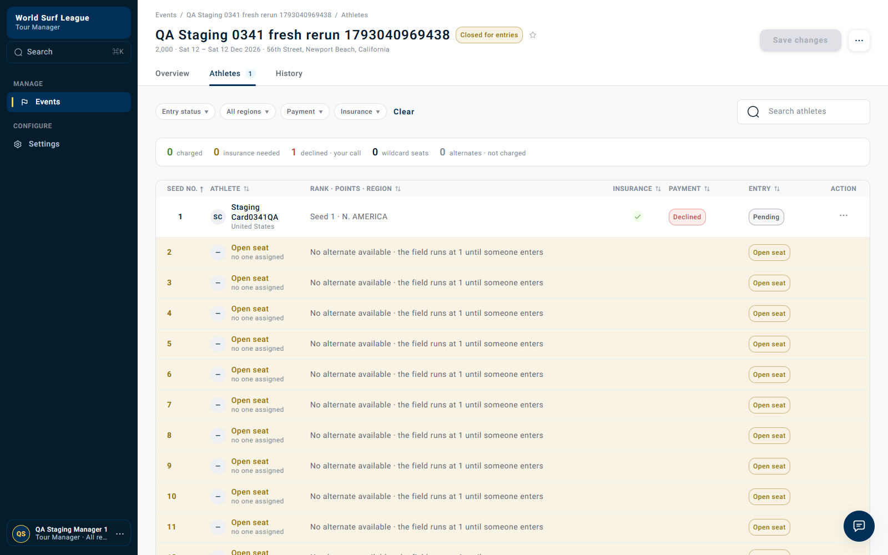
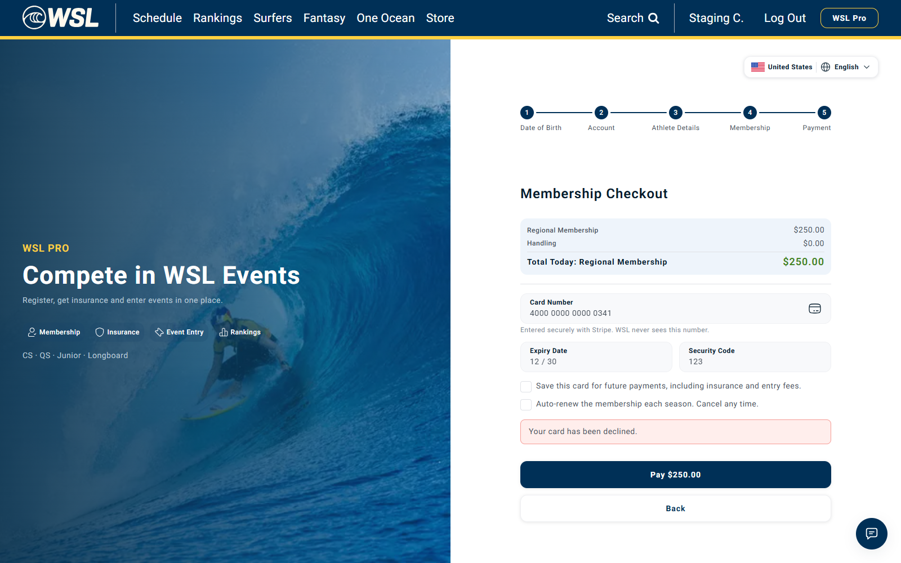
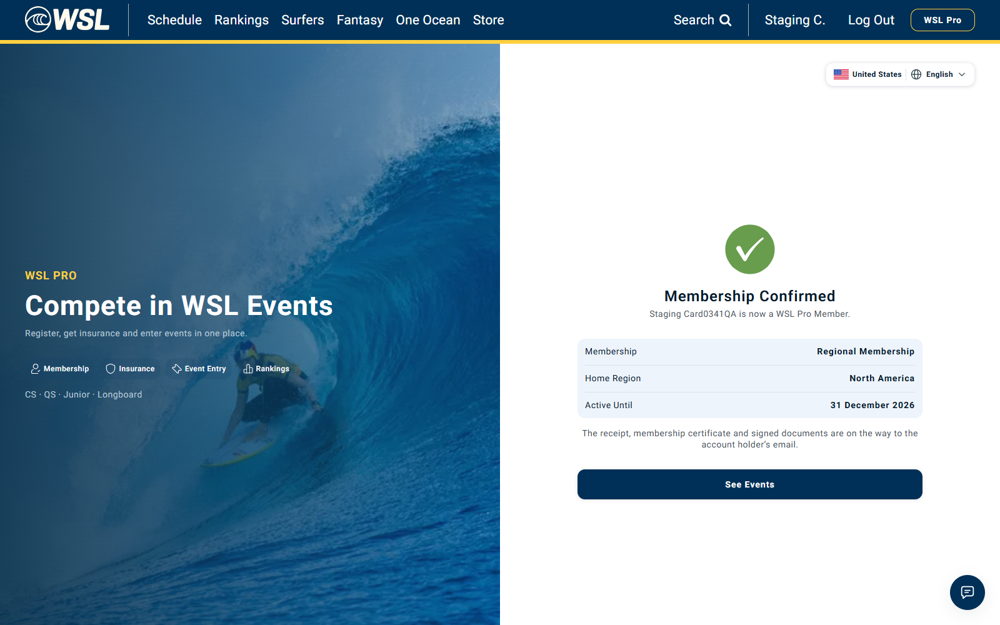
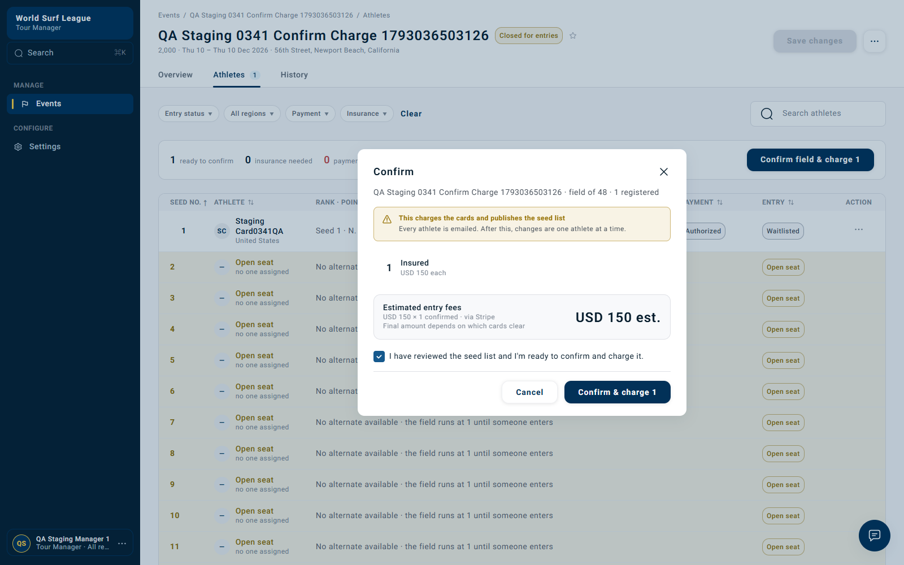
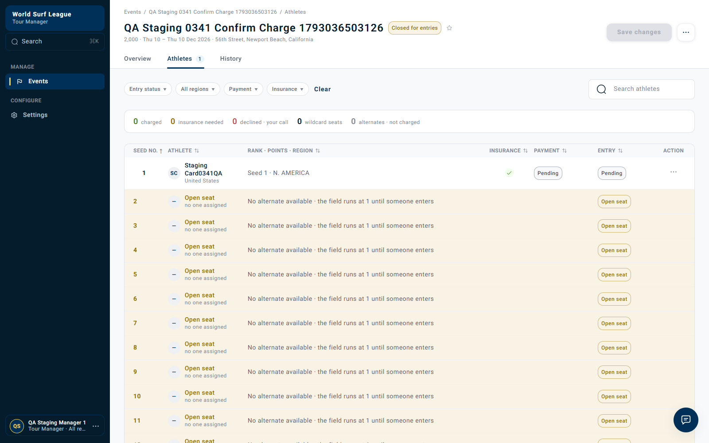

Staging payment test: card ending 0341
Latest rerun — 18:57 UTC — PASS
Fresh staging Confirm & charge with card 0341 now settles correctly to Declined. One UI charge request at 2026-10-26T18:57:03.561Z returned HTTP 200, charged=1. Payment was first observed Declined at 2026-10-26T18:57:09.248Z, approximately 5.7 seconds later.
History records Card payment declined (generic_decline); the roster offers Retry payment. Entry remains Pending because its fee is unpaid; payment is no longer stuck Pending. No retry or second charge was submitted.
New event: 01a17991-fab3-708e-b549-bd79cfc8f703
New entry: 01a17992-92f9-7094-ab38-842ab3e1c4c9
Confirmation: 01a17992-c6fb-76cb-aba7-e3de664479ae.

Full fresh rerun observations, API responses and history · Fresh event-entry recording with 0341
Original entry follow-up
The earlier pending entry also now shows Declined and Retry payment. Its History gives the decline at 18:46 UTC, approximately one hour after its 17:46 charge started. It was only read; no new charge was submitted to that entry. Follow-up evidence.
This fresh test confirms the delay did not reproduce at 18:57. It does not identify the deployment/operational change or prove all pending payments recovered.
Earlier run — 17:40–17:48 UTC (historical evidence)
26 October 2026 · app.staging01.worldsurfleague.com · Stripe test mode, provider responses livemode=false.
| Check | Result |
|---|
| Membership payment with 4000 0000 0000 0341 | Expected decline: HTTP 402, card_declined / generic_decline. |
| Valid-card membership prerequisite | 4242 succeeded and Membership Confirmed was displayed. |
| Event entry with 0341 | Saved through real UI; entry 201; roster Authorized / Waitlisted before charge. |
| Tour Manager UI Confirm & charge | One request, HTTP 200, charged=1 at 2026-10-26T17:46:40.245Z. |
| Final manager payment result | FAIL to settle within the 2-minute observation: payment Pending, entry Pending. No decline result recorded. |
What happened
- Created one new adult QA athlete via API setup and signed membership documents.
- In the actual membership checkout UI entered 0341 and clicked Pay. Stripe returned HTTP 402 with generic_decline; the membership did not complete.
- Changed to valid test Visa 4242 solely to establish an active membership for the entry-charge test. Stripe returned succeeded, livemode=false, and the app reached Membership Confirmed.
- Created a separate controlled staging event, opened entries, then registered through the athlete UI using 0341 as a new card and own insurance. Entry POST returned 201. Before charge, the roster was Authorized / Waitlisted.
- Closed registration and seeded the one-entry fixture through API setup.
- Opened Tour Manager Athletes, clicked Confirm field & charge, checked the seed-list acknowledgement and clicked Confirm & charge once.
- Observed the roster for approximately two minutes, then reloaded the manager UI. Payment and entry remained Pending. History only contained Seed and Card payment charge started. Retry payment was not offered; actions were Send message and Withdraw entry.
No second manager charge or retry was submitted. The pending fixture remains for investigation; no database repair, payment-result replay, worker trigger or cancellation was performed.
Stripe documents 0341 as a card that can be attached successfully but fails when the customer is charged. The membership decline is directly supported by the browser’s provider response. The later event-charge provider result was not independently retrieved; Pending alone does not prove where its processing failed.
Membership: expected decline, then successful prerequisite
[
{
"at": "2026-10-26T17:41:27.621Z",
"http": 402,
"id": "pi_3UUrtcHma49jszOG18wJFycb",
"status": "requires_payment_method",
"livemode": false,
"error": {
"code": "card_declined",
"decline_code": "generic_decline",
"message": "Your card was declined."
}
},
{
"at": "2026-10-26T17:41:39.318Z",
"http": 200,
"id": "pi_3UUrtqHma49jszOG0BglpG3h",
"status": "succeeded",
"livemode": false,
"error": null
}
]

Timestamped UI/API/provider evidence
Manager confirmation: payment stays pending
Event 01a1794d-d445-702a-8138-b5c5e1b34180
Entry 01a17950-741b-74a5-8280-d8bae66a6947
Reference QS-2026-M-106-001
Confirmation 01a17952-5580-71bf-9026-142f7cde425c
Entry fee USD 150 (test mode).


{
"charge": {
"at": "2026-10-26T17:46:40.245Z",
"status": 200,
"body": {
"confirmationId": "01a17952-5580-71bf-9026-142f7cde425c",
"charged": 1,
"skipped": []
}
},
"lastObservation": {
"at": "2026-10-26T17:48:37.619Z",
"row": {
"id": "01a17950-741b-74a5-8280-d8bae66a6947",
"group": "field",
"athlete": {
"initials": "SC",
"name": "Staging Card0341QA",
"country": "United States"
},
"ranking": "Seed 1 · N. AMERICA",
"region": "north_america",
"highlight": null,
"insurance": {
"state": "ok",
"label": "Insurance: verified",
"code": "verified"
},
"payment": {
"code": "pending",
"label": "Pending",
"tone": "neutral"
},
"entry": {
"code": "pending",
"label": "Pending",
"tone": "neutral"
},
"waivable": {
"fee": false
},
"actions": [
{
"code": "message",
"label": "Send message",
"destructive": false
},
{
"code": "withdraw",
"label": "Withdraw entry",
"destructive": true
}
],
"movable": true,
"pinned": false,
"hasHistory": true,
"seedRank": 1,
"alternatePosition": null,
"moveUpSeat": null,
"movedUpFrom": null
}
},
"history": {
"summary": "2 history entries",
"items": [
{
"id": "01a17952-558e-77d0-a4eb-d8b7d18c941e",
"when": "26 Oct 17:46 UTC",
"what": "Card payment charge started",
"channel": "Stripe",
"by": "Q. Staging Manager 1"
},
{
"id": "01a17950-7f52-7265-aeda-185b7e8a1545",
"when": "26 Oct 17:44 UTC",
"what": "Seed · to #1",
"channel": "Tour Manager",
"by": "Q. Staging Manager 1"
}
]
}
}Complete manager request, roster samples, history and visible actions
Evidence boundaries
An initial manager automation attempt inspected the dialog before its contents loaded; it timed out with acknowledgement unchecked and no charge submitted. Read-only roster/history verification confirmed Authorized / Waitlisted and no started charge before the final successful UI action. The primary manager recording is the final acknowledged attempt. This is not a claim of multiple charge attempts.
API setup was used for the test account, document signing, event statuses and seed order. Membership payment, event-card entry and final Confirm & charge were actual UI actions. No email-delivery or scheduled-retry check is included. Card secrets in JSON are redacted. All times in logs are UTC.